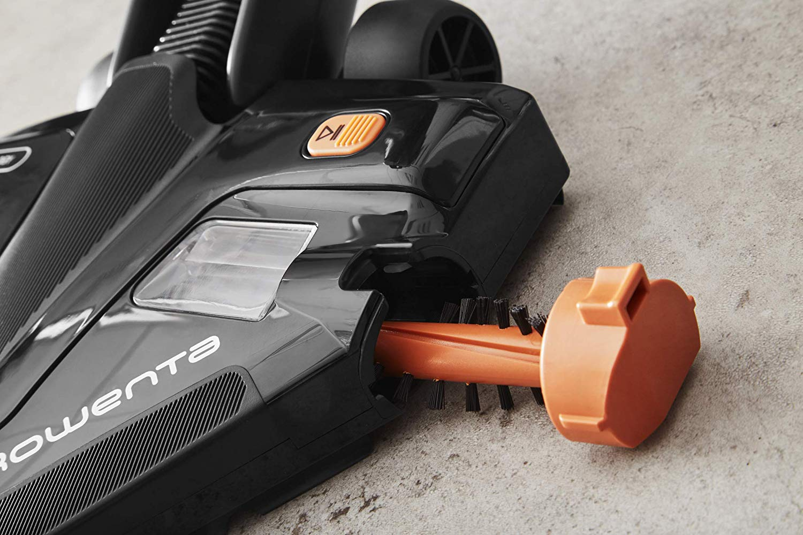

Mon premier stage en tant que technicien supérieur s'est déroulé dans une petite entreprise de bretagne. Cette dernière conçoit et vend à tout type de société des étiqueteuses de produit. Pour pouvoir répondre aux attentes des TPE quant à la réduction de prix des systèmes, l'entreprise m'a assigné à la conception d'une nouvelle étiqueteuse entrée de gamme en reprenant le modèle de gauche et en modifiant les matériaux utilisés (passage de blocs d'aluminium usinés à de la tôle). J'ai ainsi, au cours de ce stage, appris les principes fondamentaux de la mécanique comme les méthodes de conception utilisées en entreprise, la résistance des matériaux, l'utilisation du logiciel Inventor ou encore, comprendre le principe de fonctionnement d'une TPE.
Ce stage de première année d'école d'ingénieur a été réalisé au technocentre de chez Renault, dans le service LCI, créateurs de concept-car. J'ai travaillé plus précisément sur un concept ayant pour base le Kadjar avec une caisse faite en CFRP (composites polymère/fibre de carbone). Mes objectifs étaient de différents ordres. Un : piloter les essais de compatibilité électromagnétique au sein du centre d'Aubevoye. Deux : déterminer de quel ordre était l'influence du CFRP par rapport à la tôle d'acier sur l'électronique du véhicule. Trois : comprendre l'impact vibratoire d'une caisse en CFRP. Grace à ce stage, j'ai pu comprendre les principes de l'électromagnétisme appliqués à l'industrie ainsi que les moyens de se prémunir de ses effets toxiques. J'ai de plus appris à gérer un planning et un projet tout en travaillant avec des sous-traitants et des collaborateurs.
J'ai effectué ce stage au sein du service conception de l'entreprise Rowenta. Le but du projet était d'industrialiser un nouveau prototype de tête d'aspiration Delta (forme emblématique de la marque) qui permettait de réduire drastiquement ses émissions acoustiques. Il fallait donc que je reconcoive tout le système pour faire en sorte qu'il soit montable, ergonomique et économique. Pour pouvoir arriver à cela, j'ai appris à me servir du logiciel NX 11 et de ses modules de calcul ainsi qu'à travailler avec plusieurs services en même temps (développement, prototypistes etc.). Concernant le domaine technique, l'étude acoustique était réalisée dans une salle acoustique puis corrélée avec l'analyse modale après chaque implantation de sous ensemble dans la tête (par exemple : le nouveau système d'extraction de brosse qui a nécessité une réétude complète de la tête). Les études mécaniques étaient faites par éléments finis sur NX et validées par les prototypes fabriqués en Stéréolithographie.
Ce dernier stage s'est déroulé dans le même service que l'année précédente. J'ai cette fois là eu pour objectif de travailler sur deux futurs aspirateurs d'une nouvelle gamme de produits versatiles (aspirateurs pouvant se transformer en cleanette). Là ou l'ancien projet s'était axé sur la partie Conception/Recherche celui-ci s'est axé sur la partie Gestion/Réunions/Conception. A chaque réunions techniques, les idées était discutées, modifiées puis dessinées. Mon rôle était donc servir de guide aux différents chefs de projets et autres collaborateurs pour faire en sorte que le projet soit industrialisable et qu'il puisse être réalisé dans les délais. Toutes ces contraintes m'ont appris à m'organiser très rapidement, à prendre des décisions difficiles tout en restant à l'écoute des autres. Concernant la conception et les calculs, ils ont été faits sur NX 12. Je décrirai ce projet plus en détails lors de sa sortie.